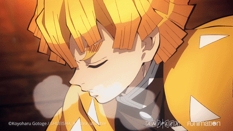
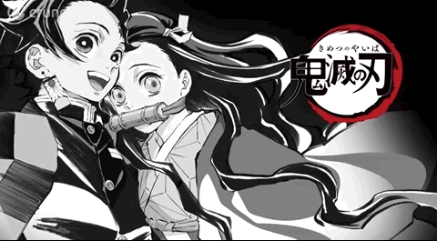
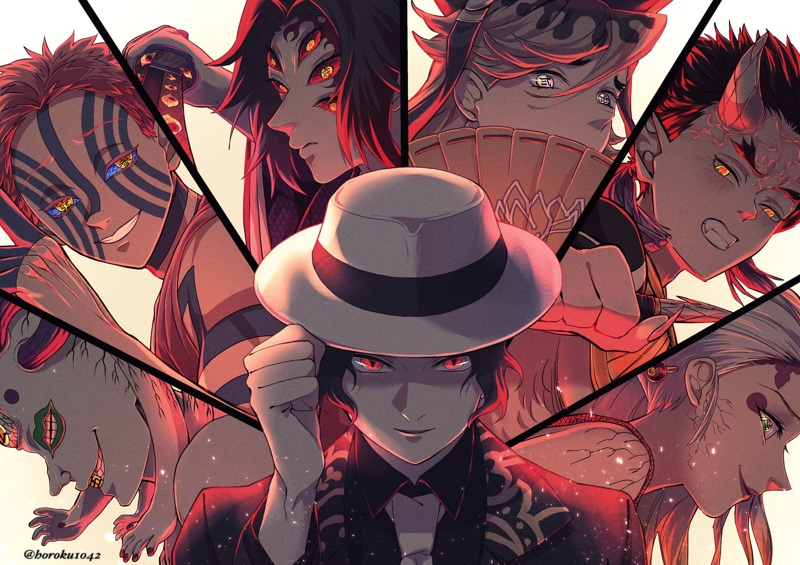
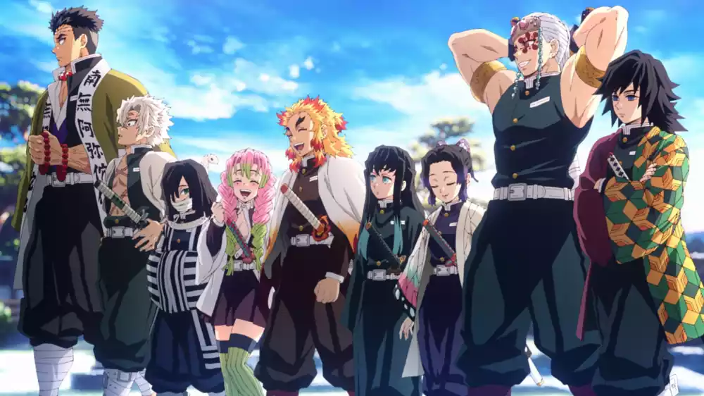
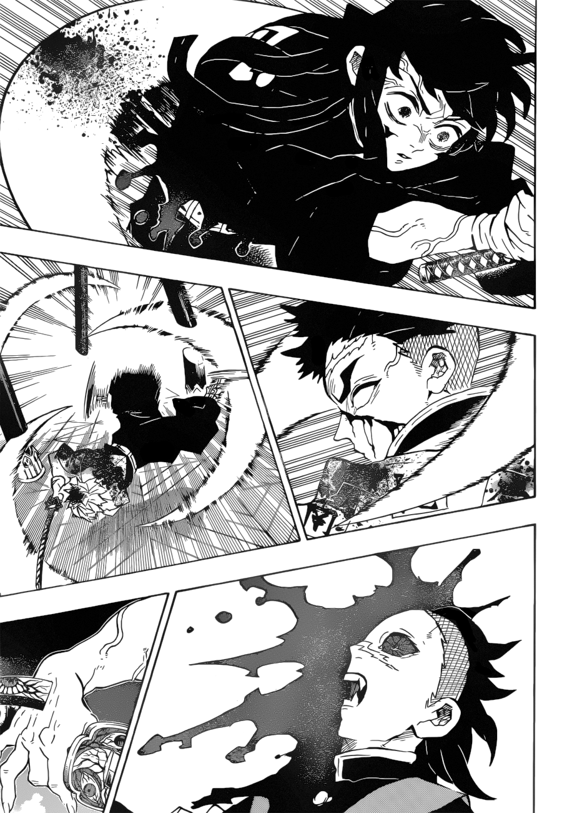
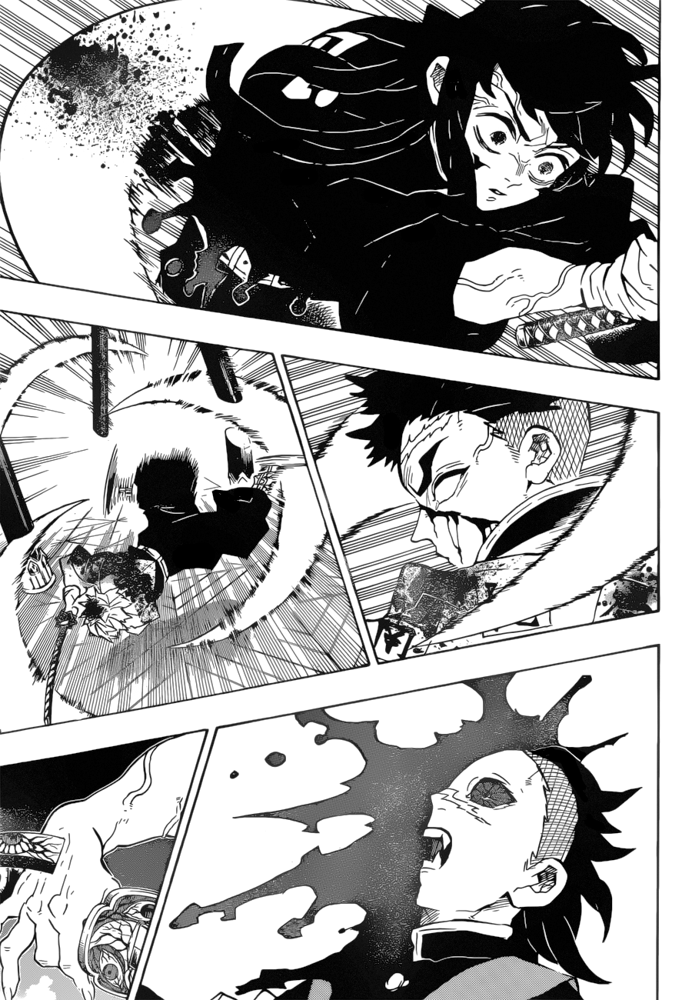

Sabe quando um anime se torna um sucesso repentinamente? Pois é. Esse foi o caso do Demon Slayer: Kimetsu no Yaiba, que despertou a audiência de muitos quando um dos seus episódios virou assunto nas redes sociais.


Onis
Caçadores


Os Onis são seres humanos que foram infectados com o sangue de um demônio chamado Muzan kibutsuji, o grande antagonista da série. Ele injeta o seu sangue nas pessoas que passam por uma transformação, adquirindo Habilidades especiais. saiba mais.
O Esquadrão de Exterminadores de Demônios é uma organização existente desde os tempos mais antigos com o intuito de proteger a raça humana dos demônios ou onis. Para isso eles fazem uso de tecnicas de respiração para manipular a quantidade de oxigenio que passa por seus corpos saiba mais.
 
